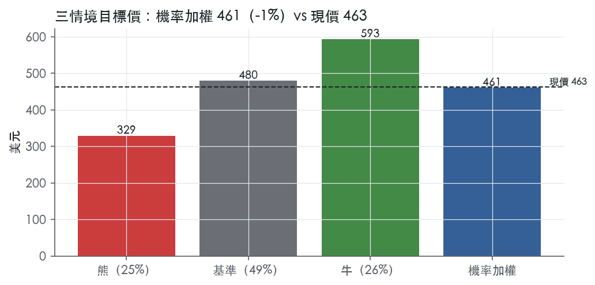
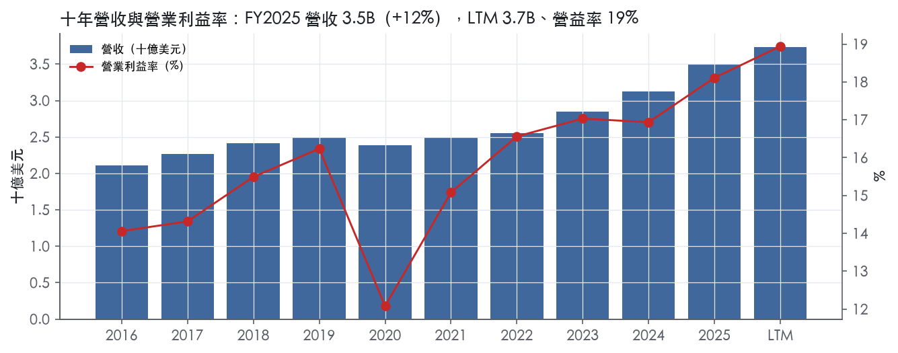
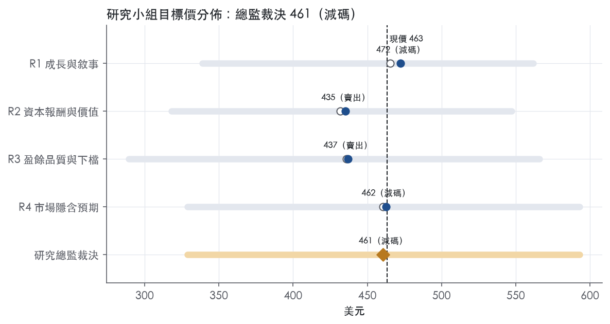
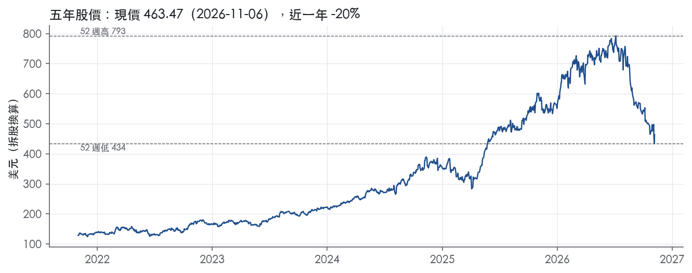

評等總表 › 工業 › CW
溢價退場大半兌現但成長降檔，倍數回零報酬點，報酬低於門檻｜評等 減碼｜目標價 461
| 報告日 | 評等 | 目標價 | 當時股價 | 超額報酬 |
|---|---|---|---|---|
| 2026-11-06 | 減碼 | 461 | 463 | -10.2% |
| 2026-10-30 | 減碼 | 480 | 476 | -8.9% |
| 快評 | 動作 | 結論 |
|---|---|---|
| 2026-11-05 | 維持 | Q3 高於預測、指引上調，維持減碼 |
| 評等 | 減碼 |
| 12 個月目標價 | 461 美元 |
| 現價 | 463.47 美元（2026-11-06） |
| 預期報酬 | 股價 -0.6%＋股息 0.2%＝總報酬 -0.4%；同業籃門檻 9.8%，超額 -10.2% |
| 估值方法 | P/E 27.0x，套在第 5–8 季的EPS（也就是一年後的未來四季） |
| 三情境 | 熊 329／基準 480／牛 593 |
| 研究流程 | 四位研究員兩輪辯論＋研究總監裁決 |
| 資料來源 | SEC EDGAR XBRL、Tiingo、FRED（全免費） |
溢價退場大半兌現但成長降檔，倍數回零報酬點，報酬低於門檻（研究總監裁決，四位研究員兩輪辯論後）
評等 減碼｜12 個月目標價 461 美元（總監三情境機率加權 471 與研究員中位數 450 各半）｜現價 463.47（2026-11-06）
預期報酬：股價 -0.6%＋股息 0.2%＝總報酬 -0.4%。同業籃門檻 9.8%，超額 -10.2%。
估值方法：P/E 27.0x，套在第 5–8 季的EPS（也就是一年後的未來四季）。三情境：熊 329（25%）／基準 480（49%）／牛 593（26%）。
立場中性而評等減碼：評等看的是「預期總報酬 -0.4% − 同業籃門檻 9.8%」＝超額 -10.2%，不是絕對漲跌；中性但超額偏離門檻，代表情境機率或股利把報酬推離門檻。
什麼會讓研究總監改變看法：FY2027 指引成長中點 ≥10% 且 DE 營益率回 28% 以上，倍數上移至 28–29.8x、轉多；DE 營收成長而營益率連兩季 <26%，或 FY2027 指引中點 <7%，倍數降到 25x 以下、熊機率上調。
| 過去四季（實際，FY2026Q3） | 未來四季 | 第 5–8 季 | 第 9–12 季 | |
|---|---|---|---|---|
| 營收（B） | 3.7B | 4.1B | 4.4B | 4.7B |
| 營收成長 | 10.7% | 9.1% | 8.0% | 7.5% |
| 營業利益率 | 18.9% | 19.2% | 19.5% | 19.7% |
| EPS（美元） | 14.94 | 15.77 | 17.77 | 19.80 |
| EPS 成長 | 22.0% | 5.5% | 12.7% | 11.5% |
| 每股股息（美元） | 1.00 | 1.00 | 1.00 | 1.00 |
| P/E（現價） | 31.0x | 29.4x | 26.1x | 23.4x |
| 股息殖利率（現價） | 0.2% | 0.2% | 0.2% | 0.2% |
過去四季為申報數字；預測為研究總監的假設、程式計算。倍數與殖利率都用現價計算，用來看現價對應各期獲利的高低。
| 項目 | 上次（2026-11-01） | 這次（2026-11-07） | 變動 |
|---|---|---|---|
| 評等 | 減碼 | 減碼 | ＝ |
| 機率加權目標價（美元） | 480 | 461 | -4.1% |
| 超額報酬 | -8.9% | -10.2% | -1.3 pp |
| 目標倍數 | 30x | 27x | — |
| 未來四季營收成長 | 8.0% | 9.1% | +1.1 pp |
| 未來四季營益率 | 19.0% | 19.2% | +0.2 pp |
| 未來四季 EPS（美元） | 14.85 | 15.77 | +6.2% |
| 熊／基準／牛機率 | 23／48／29 | 25／49／26 | — |
程式計算；「未來四季」各自從當次報告的資料起點算。研究總監逐點說明見第八章「與上次報告比較」。
| 情境 | 機率（歷史） | 故事 | 未來四季營收成長 | 第 5–8 季營益率 | 倍數 | 目標價 | 股價漲跌 |
|---|---|---|---|---|---|---|---|
| 熊 | 25%（22%） | 風險表第 1 條轉結構（DE 營收成長而營益率連兩季 <26%，MOSA 價格競爭）疊加第 3 條（本行下行路徑 GDP 0.3 壓商用航太與工業車輛），第 2 條政府關門／付款延遲為觸發，倍數回前瞻帶 P50–P75 | 6.0% | 18.5% | 21.0x | 329 | -29.0% |
| 基準 | 49%（51%） | 達成 FY2026 指引、2027 高個位數成長、營益率每年擴 20–30bps，DE 拖累被海軍與動力抵銷，成長降檔使倍數再小幅回落至零報酬點，報酬來自盈餘 | 9.1% | 19.5% | 27.0x | 480 | 3.5% |
| 牛 | 26%（27%） | FY2027 指引成長中點 ≥11%、DE 訂單轉雙位數營收且營益率回 28%、先進反應爐量產合約，本行上行路徑，倍數回持平之上 | 11.0% | 20.2% | 31.0x | 593 | 28.0% |
目標價由程式依研究總監的驅動與倍數計算；機率由研究總監給定。括號內是歷史頻率：把這檔股票過去十年 12 個月報酬的波動形狀，置中在基準情境，結果落在各情境附近的比例。

四位研究員用不同方法各自估值，回應研究總監的質疑後交出第二輪，最後由總監逐點裁決。各研究員的主張見第七章，裁決理由見第八章，完整論證見《研究底稿》。
| 立場（一輪→二輪） | 加權目標價（一輪→二輪） | 評等（一輪→二輪） | 第二輪倍數 | 熊～牛目標價 | |
|---|---|---|---|---|---|
| R1 成長與敘事 | 中性→看空 | 465→472 | 減碼→減碼 | 30.0x | 339～562 |
| R2 資本報酬與價值 | 看空→看空 | 432→435 | 賣出→賣出 | 27.8x | 318～547 |
| R3 盈餘品質與下檔 | 中性→看空 | 436→437 | 賣出→賣出 | 25.0x | 289～566 |
| R4 市場隱含預期 | 看空→看空 | 460→462 | 減碼→減碼 | 26.0x | 329～593 |
| 研究總監裁決 | 中性 | 461 | 減碼 | 27.0x | 329～593 |
目標價由程式依各自的驅動與倍數計算；評等＝機率加權總報酬 − 同業籃門檻。
Curtiss-Wright 是一家以高度工程化產品、解決方案與服務為核心，主要服務航太與國防（A&D）市場，並在商用核電、流程與工業市場提供關鍵技術的全球整合型企業¹。公司在高性能平台與關鍵應用上維持獨特定位，這類應用要求技術純熟度，公司受益於數十年工程專業與知識傳承¹。客戶主要是國防主承包商、商用航太原廠設備製造商（OEM），以及多家能源與製造業公司，公司在全球以技術與價格為基礎競爭¹。2025 年美國及外國政府終端用戶銷售佔總淨銷售的 58%¹；其中約 47% 來自美國政府機構及其主承包商的合約，顯示公司本質上是一家國防供應鏈高曝險的精密製造商。LTM 營收 3.74B 美元，規模足以支撐在細分利基市場的領導地位，但公司並非單一大客戶依賴型——2023～2025 年沒有任何單一客戶貢獻超過總淨銷售 10%¹。
公司依產品與服務及所服務市場劃分為三個可報導分部：航太與工業（Aerospace & Industrial）、國防電子（Defense Electronics）、海軍與動力（Naval & Power）¹。航太與工業分部銷售主要來自商用航太與一般工業市場，較少部分來自國防市場，產品涵蓋感測器、控制與電機致動元件、表面處理服務（噴丸、雷射強化、工程塗層），以及工業與特殊車輛產品如電力管理電子、牽引逆變器與變速換檔系統¹。Q3 2026 該分部銷售 282M 美元，年增 14%，調整後營益率 19.4%，提升 80bps²。國防電子分部銷售主要面向國防市場（航太防務、地面防務、海軍防務），產品包括商規現貨（COTS）嵌入式運算模組、資料擷取與飛行測試儀器、整合子系統與戰術通訊設備，公司在超過 400 個國防平台、逾 3,000 個計畫上擁有據點¹。該分部 Q3 2026 銷售 259M 美元，年增僅 2%，調整後營益率反而下滑 220bps 至 27.0%，因產品組合不利與研發投入增加²；這是三個分部中唯一成長明顯放緩、利潤率逆風的業務，值得後續追蹤。海軍與動力分部銷售主要面向海軍國防與動力及流程市場，包括為美國海軍 Virginia 級、Columbia 級潛艦計畫及 Ford 級航艦計畫提供主冷卻泵、發電機、蒸汽輪機等推進及輔助設備，亦提供商用核電廠零組件與新一代小型模組化反應爐（SMR）相關的反應器冷卻泵（RCP）與控制棒驅動機構¹。該分部 Q3 2026 銷售 412M 美元，年增 12%，調整後營益率提升 200bps 至 18.6%²。三分部中海軍與動力目前成長動能最強、且受惠於核電新建與 SMR 題材放量，國防電子則是短期內的拖累項。至於各分部占集團營收的精確年度比重與各自的歷史毛利率，10-K 未揭露分部層級的毛利數字。
公司客戶結構分散，服務多個產業的數百家客戶，沒有單一客戶佔總淨銷售超過 10%¹。2025、2024、2023 年美國政府及外國政府終端用戶銷售分別佔總淨銷售的 58%、57%、56%，呈逐年緩升¹。美國政府合約銷售（含直接作為主承包商與間接作為分包商）2025 年達 1,647,019 千美元，較 2024 年的 1,496,436 千美元成長約 10%，其中海軍與動力分部貢獻 704,051 千美元、國防電子分部 761,926 千美元，顯示國防電子才是美國政府業務單一最大來源¹。地理上，公司海外業務佔稅前利潤的比重從 2023 年的 35%、2024 年的 38% 上升至 2025 年的 41%，呈現明顯的海外（尤其國際國防）業務佔比上升趨勢¹。通路上，商用航太、工業及海軍與動力的商用核電/流程業務走一般商業銷售與行銷渠道，而國防業務及海軍與動力的國防業務則透過受監管的政府採購渠道¹。主要製造據點分佈於美國多州（亞利桑那、加州、紐約、北卡、俄亥俄、賓州、南卡）及加拿大、墨西哥、英國¹。公司持續擴大國際國防訂單（如 Q3 2026 地面防務分部來自多個國際客戶的轉塔驅動穩定系統銷售增加）佐證海外佔比上升的趨勢是結構性、非一次性。
過去四個財季營收與營益率呈連續擴張，公司兩次在年中上修全年指引，動能持續增強。FY2025Q4（截至 2025-12-31）營收 0.95B 美元，年增 14.9%，營益率 19.2%（dv 推導）。FY2026Q1 營收 0.91B 美元，年增 13.4%，營益率回落至 17.5%（is.revenue/margin.FY2026Q1）。FY2026Q2 營收 924M 美元，較去年同期的 877M 美元增加 5%，報導營業利益 179M 美元、營業利益率 19.3%，調整後 EPS 3.72 美元、年增 15%，自由現金流 160M 美元、FCF 轉換率 116%，公司並將全年調整後銷售成長指引上修至 8%–9%、營益成長上修至 11%–13%、稀釋 EPS 上修至 15.10–15.40 美元³。FY2026Q3 營收 953M 美元，較去年同期 869M 美元增加 10%，報導營業利益 188M 美元、營業利益率 19.7%，調整後 EPS 3.94 美元、年增 16%，自由現金流 157M 美元、FCF 轉換率 108%，新增訂單 1.1B 美元、年增 15%、book-to-bill 1.1 倍，期末在手訂單 4.6B 美元、年初至今增加 12%²。公司同時再度上修全年指引：銷售成長上修至 8%–10%，營益成長上修至 12%–14%，營益率上修至 19.2%–19.4%，稀釋 EPS 上修至 15.40–15.60 美元，FCF 上修至 595–615M 美元²。CEO Lynn Bamford 表示：「訂單年增 15%，主要由國防電子市場的持續強勁需求及所有 A&D 市場的成長驅動，強化我們對能持續交付一致且耐久成長的信心」²。連續兩季上修指引且訂單增速高於營收增速，意味著 2027 年營收動能仍有支撐。
公司將現行戰略稱為「Pivot to Growth」，核心是最大化營收、營業利益與自由現金流成長，以持續為股東創造價值，並建立在銷售、營業利益率、稀釋每股盈餘與自由現金流一致成長的營運與財務紀律基礎上¹。公司認為自身差異化來自於國防業務的長期穩定性與商用業務的靈活性所組成的綜合投資組合優勢¹。策略聚焦透過有機與無機（併購）銷售成長實現營收加速，深化並透過「One Curtiss-Wright」願景與商業卓越（Commercial Excellence）擴展客戶關係，並尋求在國防與商用市場技術之間建立跨市場機會¹。公司以「Operational Growth Platform」加速 Pivot to Growth 策略，持續推動利潤率擴張與整體組合節省，使公司能維持穩定的研發投入以推動創新與有機成長；資本配置優先順序為併購，其次是透過庫藏股及股息回饋股東¹。在最新財報中，公司強調在商用核電（新一代先進反應爐自開發階段邁入初始原型階段）、潛艦計畫（Columbia 級、Virginia 級）、戰機與直升機平台的嵌入式運算及致動設備需求，是驅動各分部成長的具體引擎²；公司也提及持續執行庫藏股買回（2026 年預計回購 460M 美元，接近 2025 年創紀錄的 466M 美元水準）作為資本配置承諾的一環²。整體看，CW 的成長敘事由國防電子的長期平台滲透、海軍造艦周期與商用核電/SMR 題材三條腿支撐，三者中海軍與動力目前兌現最快、國防電子短期受產品組合拖累。考慮到 58% 收入來自政府端且訂單增速（15%）持續高於營收增速（10%），在手訂單 4.6B 美元已覆蓋約 1.2 年營收，下行風險主要在國防電子的毛利率結構而非整體需求。目前尚無法從既有資料判斷 SMR 商業化放量的具體時間表，10-K 僅表述公司「積極參與並爭取」相關業務。

CW 的護城河評級為窄：我們有把握未來 5 年以上 ROIC 仍高於資本成本，但十年來的超額報酬幅度偏薄，撐不起 10 年以上的把握。護城河的核心是零組件嵌入國防與核能平台後形成的轉換成本，再加上利基市場的效率規模。近五年 ROIC 從低點回升到十年高點，但這段改善主要來自營業費用槓桿，毛利率並沒有同步擴張，所以我們把趨勢定為穩定，不定為變寬。
轉換成本是第一來源，也是我們唯一給高信心的類別。公司的產品常用在不容失效的安全關鍵應用¹。公司在超過 400 個國防平台、逾 3,000 個計畫上擁有平台級內容¹。公司自述與客戶有長期關係，並深度嵌入客戶的工作流程¹。戰機與潛艦這類平台服役數十年，零組件一旦通過認證、寫進設計，更換供應商就要重新驗證並承擔計畫風險，客戶理性的做法是沿用到平台退役。公司也把總生命週期管理服務與技術更新列為國防電子業務的受益來源¹。這代表轉換成本從首次出貨延伸到售後與升級週期。
效率規模是第二來源。海軍與動力分部向美國海軍提供主冷卻泵、高功率密度緊湊型馬達、發電機、蒸汽輪機與閥門，主要支援 Virginia 級、Columbia 級潛艦與 Ford 級航艦計畫¹。公司另透過三個沿岸服務中心，為美國海軍大西洋與太平洋艦隊提供維修保養¹。商用核電新建市場方面，公司為 Westinghouse AP1000 提供反應器冷卻泵與控制棒驅動機構¹。這些市場的總需求由少數造艦計畫與反應爐決定，容量只夠養活極少數合格供應商，新進者拿不到足以回收資格認證成本的量。
我們不列無形資產。10-K 談的是數十年工程專業與一連串產業「第一」的歷史，沒有點名具體專利組合或獨家授權，歷史淵源本身不是法定保護。成本優勢與網路效應在原文中找不到證據，同樣不列。
數字支持窄護城河，不支持寬護城河。ROIC 十年平均 12.9%，資本成本代理值 9.8%，平均超額 3.0%。ROIC 有資料的 9 年中有 8 年高於資本成本，唯一例外是最低點 9.2%。
最有力的證據是毛利率的穩定度：十年標準差只有 0.9%，區間 34.8% 到 37.5%。FY2020 營收衰退 -3.9% 的那年，毛利率仍有 35.2%（資料包 FY2020），營益率則掉到 12.1%（量化底稿最低值）。換句話說，衝擊打在費用去槓桿，沒有打在定價，這正是轉換成本在財報上的樣子。
數字跟寬護城河的主張有三處衝突，這也是我們不給寬的原因。第一，3.0% 的平均超額報酬偏薄，資本成本代理值又以 10 年債 4.84為基礎，利率若再上行，這段利差會被壓縮。第二，最低點 9.2% 已低於資本成本，代表在一次普通的需求衝擊下，超額報酬就會歸零。第三，ROIC 最新 15.9%、營益率最新 18.1% 都是十年最高，但毛利率最新 37.2% 只略高於平均 36.4%，改善主要來自營收成長 12.1% 帶來的費用槓桿，屬於國防上行週期的成分，不能直接當成護城河變寬。
需要追蹤的反證是：FY2026Q2 與 Q3 的毛利率為 39.4% 與 39.0%，高於十年最高的 37.5%。但 FY2026Q1 只有 36.3%，兩季不足以定論。若 FY2026 全年毛利率確認站上十年區間上緣，我們會把趨勢上修為變寬。
最大的結構性威脅是開放架構。公司以 MOSA 開放標準架構供應商的身分參與市場¹。開放標準的設計目的本來就是降低對單一供應商的鎖定，對板卡級 COTS 模組而言，這會直接削弱轉換成本。公司也承認，國防主承包商的委外是出於對可負擔性與標準開放架構的追求¹。公司自述在全球主要以技術與價格競爭¹。價格既然是競爭軸線之一，定價權就有上限。
政府合約條款本身就封住了超額報酬的上限。美國政府可隨時選擇部分或全部終止合約¹。固定價格合約通常由公司吸收大部分成本超支，成本節省時客戶則依公式收回一部分¹。這是下行由公司承擔、上行與客戶分享的不對稱結構。2025 年政府終端銷售占總淨銷售 58%¹。預算週期因此是護城河之外、但直接決定 ROIC 能否守住的外生變數。
資本配置以併購為第一優先¹。在國防資產估值偏熱的環境下高價併購，商譽會稀釋 ROIC，這是公司自己可能侵蝕護城河的途徑。業務概況章指出國防電子分部短期受產品組合拖累，若這是開放架構帶來的價格壓力而非一次性組合因素，就是侵蝕的早期訊號。
目標倍數相對同業應給小幅溢價，理由是毛利率長期穩定、平台嵌入帶來可見度，但溢價應設定在 5 年內收斂，不應套用寬護城河的永續溢價。現在 P/E 31.0x 已高於自身 5 年中位數 27.8x與 10 年中位數 23.8x，市場已部分定價護城河變寬的情境。我們的趨勢判斷是穩定，因此不支持倍數在現有水準上再擴張。
| 指標 | 最新 | 十年平均 | 標準差 | 最低 | 最高 |
|---|---|---|---|---|---|
| ROIC | 15.9% | 12.9% | 2.1% | 9.2% | 15.9% |
| 毛利率 | 37.2% | 36.4% | 0.9% | 34.8% | 37.5% |
| 營業利益率 | 18.1% | 15.6% | 1.7% | 12.1% | 18.1% |
| FCF 利潤率 | 15.8% | 13.7% | 2.6% | 8.9% | 17.8% |
| ROE | 19.4% | 16.2% | 2.3% | 11.3% | 19.4% |
程式計算。資本成本代理值（10 年債＋5%）：9.8%；ROIC 平均減資本成本：3.0%；ROIC 有資料的 9 年中，高於資本成本 8 年。
Curtiss-Wright 的盈餘品質評分表全線綠燈：CFO／淨利 LTM 1.28x、三年均值 1.31x、十年均值 1.44x，自由現金流／淨利 LTM 1.06x，應計比率為負值（-2.8%），沒有任何紅旗被程式標出。獲利持續轉換為現金而非停在應收或存貨科目，槓桿低、利息保障高，股東回饋力度大，整體屬於可以直接按 GAAP 數字估值、不需要大幅打折的體質。
跟得上，而且是長期趨勢而非單季現象。LTM CFO／淨利 1.28x、FCF／淨利 1.06x，三年與十年平均都同樣≥1，顯示盈餘有現金支撐，不是靠應計項目堆出來的數字。年度數列也印證這點：FY2025 CFO 0.64B、FCF 0.55B，對比淨利 0.48B，現金持續跑在淨利前面（量化底稿 cf/is.FY2025）。季度層面比較有雜訊——FY2025Q1 與 FY2026Q1 CFO 均為負值（-0.04B、-0.01B），這是應收/應付週期性的季節性現象，FY2025 全年與近八季仍能看到 Q4 大幅轉正（0.35B）、Q2/Q3 穩定貢獻的型態，季節性而非結構性問題（量化底稿 cf 季度表）。應計比率常年為負（十年均值 -2.6%、LTM -2.8%），代表 CFO 長期超過淨利，是現金品質的正面訊號，不是警訊。
Q3 2026 GAAP 營業利益 188M vs. 調整後 189M，差距僅 1M，調整幅度極小²。GAAP 稀釋 EPS 3.77 美元 vs. 調整後 3.94 美元，差距主要來自 Defense Electronics 區隔的調整項（該區隔 GAAP 與 Adjusted 營業利益完全相同，皆為 70M）²。全年 Guidance 的調整基礎排除「first-year purchase accounting costs associated with prior-year acquisitions, costs associated with both our FY24 and FY26 Restructuring Programs, and gains/losses associated with recording equity securities held for investment purposes at fair value」²。這些項目中，收購首年攤銷與重組費用屬於可重複發生的「類經常性」成本——公司長期維持收購驅動成長策略，重組專案也連續跨兩個財年（FY24 與 FY26），估值時不宜完全加回當作一次性。公允價值變動的股權投資損益屬於非營運雜訊，加回合理。整體而言，GAAP 與調整後數字差距本季很小（1M 營業利益、0.17 美元 EPS），顯示盈餘品質本身不依賴大幅美化，調整項對結論影響有限。
槓桿低、回饋股東力度大但現金流足以支撐。淨負債／EBITDA LTM 0.82x、三年均值 0.96x、十年均值 1.23x，全部落在綠燈區，淨負債僅 0.68B 對 EV 17.55B，資產負債表非常保守。利息保障倍數 LTM 16.8x，遠高於 8x 門檻，付息能力無虞。資本配置上，（股利＋回購）／淨利 LTM 高達 93.9%，接近全額回饋股東，三年均值 65.1%、十年均值 69.1%，本季也揭露公司第三季回購約 352M 美元、全年預計回購 460M 美元，另新增 510M 美元回購額度至總授權 700M 美元²。稀釋股數年變動為負（-0.7%、三年 -0.9%），確認回購確實在淨減少股數而非僅抵銷 SBC 稀釋。公司策略上仍以併購為資本配置優先順位、股東回饋次之¹，目前帳上現金與低槓桿足以同時支持兩者，不構成財務體質風險。
程式計分表九項指標全數綠燈，沒有被標記的紅旗，以下針對唯一具有解讀空間、但未達紅燈門檻的項目說明：
沒有應計比率過高、沒有存貨/營收成長背離（FY2025 僅 +1.5pp，遠低於 15pp 門檻）、沒有稀釋股數擴張、沒有利息保障惡化等任何真實警訊。
估值應以 GAAP 數字為主，不需要對盈餘打折，因為現金轉換長期≥1、應計比率為負、GAAP 與調整後 EPS 差距本季僅 0.17 美元。唯一需要留意的是公司非 GAAP 調整項中的收購攤銷與重組費用具有跨年度重複性，若估值模型直接採用 Adjusted EPS 做倍數定價，應在敏感度分析中保留一個保守情境（用 GAAP EPS 14.94 美元而非 Adjusted 數字）以避免高估常態化盈餘能力。槓桿極低（淨負債／EBITDA 0.82x）不構成任何倍數限制，目前 P/E 31.0x 處於 5 年 60.4 分位、EV/EBITDA 21.3x 處於 63.0 分位，估值偏貴是成長與倍數擴張的問題，不是盈餘品質的問題。
| 項目 | LTM | 近三年 | 十年 | 燈號 | 規則 |
|---|---|---|---|---|---|
| 營業現金流／淨利 | 1.28x | 1.31x | 1.44x | 綠 | ≥1.00x 綠、<0.80x 紅 |
| 自由現金流／淨利 | 1.06x | 1.16x | 1.25x | 綠 | ≥0.90x 綠、<0.60x 紅 |
| 應計比率（(淨利−CFO)／平均總資產） | -2.8% | -2.7% | -2.6% | 綠 | ≤0.0% 綠、>5.0% 紅 |
| SBC／營收 | 0.8% | 0.6% | 0.6% | 綠 | ≤3.0% 綠、>8.0% 紅 |
| 淨負債／EBITDA | 0.82x | 0.96x | 1.23x | 綠 | ≤1.50x 綠、>3.00x 紅 |
| 利息保障倍數（營業利益／利息） | 16.8x | 12.0x | 10.1x | 綠 | ≥8.00x 綠、<3.00x 紅 |
| 稀釋股數年變動 | -0.7% | -0.9% | -2.0% | 綠 | ≤0.0% 綠、>3.0% 紅 |
| （股利＋回購）／淨利 | 93.9% | 65.1% | 69.1% | 綠 | ≥50.0% 綠、<0.0% 紅 |
| 存貨成長 − 營收成長（FY2025） | +1.5pp | — | — | 綠 | ≤5pp 綠、>15pp 紅 |
程式計算；燈號以 LTM（無則近三年平均）判定。
| 風險 | 觸發指標（看什麼數字、在哪裡看） | 對 EPS 的影響方向與粗略幅度 | 未來 12 個月發生機率（高／中／低） | 出處 |
|---|---|---|---|---|
| 國防電子產品組合/研發投入侵蝕利潤率 | 國防電子分部調整後營益率（季報）；Q3 2026 已從 29.2% 降至 27.0%，跌 220bps² | 負向，中；該分部為單一國防政府銷售最大來源（761.9M 美元，2025）¹ | 高 | 8-K 財報新聞稿（2026-11-05） |
| 美國國防預算週期性波動與債務上限/政府關門 | DoW 預算決議、OBBBA 後續舉債上限法案進展、政府關門公告 | 負向，大；2025 年美國及外國政府終端銷售佔總淨銷售 58%⁴ | 中 | 10-K 年報 FY2025 Item 1A（風險因素） |
| 商用航太/工業景氣循環（波音/空巴產能、油價、罷工） | OEM 生產率公告、航空公司客運數據、波音/空巴交機數 | 負向，中；商用航太與一般工業為航太與工業分部主要驅動力¹ | 中 | 10-K 年報 FY2025 Item 1A（風險因素） |
| 商譽與無形資產減損 | 年度減損測試結果、併購後標的財務表現；商譽及無形資產（扣除累計攤銷）約 2.2B 美元，占總資產約 43%⁴ | 負向，大（一次性非現金）；若觸發減損將直接衝擊 GAAP EPS | 低 | 10-K 年報 FY2025 Item 1A（風險因素） |
| 供應鏈／單一供應商零組件短缺與通膨轉嫁不完全 | 毛利率季度變化、原材料與勞動力成本公告 | 負向，中；公司明言「無法保證能將較高原材料成本完全透過漲價轉嫁」⁴ | 中 | 10-K 年報 FY2025 Item 1A（風險因素） |
國防電子利潤率惡化是目前唯一「已經在報表上發生」的風險，不是假設性情境。Q3 2026 該分部銷售僅增 2%，營益下滑 5%，調整後營益率年減 220bps 至 27.0%，公司將原因歸為「國防電子分部產品組合不利，以及研發投入增加」²。該分部 2025 年對美國政府銷售貢獻 761,926 千美元，是三分部中最大宗¹。若這個組合惡化趨勢延續到 Q4 及 2027，將直接壓縮集團營益率擴張的敘事，削弱目前支撐估值溢價（trailing P/E 分位 60.4%）的「一致成長」故事。
美國政府預算週期性波動是結構性風險，公司自己明確量化曝險程度：2025 年美國及外國政府終端用戶銷售佔總淨銷售 58%⁴；約 47% 來自美國政府機構及其主承包商合約¹。公司也提到 2025 年 7 月 4 日通過的 OBBBA 將聯邦舉債上限提高 5 trillion 美元（原文數字），但若國會未來未能進一步暫停或提高舉債上限，可能延遲或導致採購合約流失，且公司可能被要求在政府無法及時付款的情況下仍須繼續履約⁴。這類風險不易精確量化成 EPS 幅度，但方向明確偏負。
商用航太景氣循環是公司明確列為獨立風險項目的傳統曝險，驅動因子包括客運量、油價、高利率、飛機退役週期、罷工（如 IAM 對波音的工作停擺）及地緣政治衝突⁴。航太與工業分部 Q3 2026 表現仍強（銷售增 14%、營益率升 80bps）²，顯示當下尚未出現週期轉弱訊號，但這是曝險存在、尚未兌現的風險，建議持續追蹤 OEM 生產率與航空公司獲利數據。
商譽與無形資產減損風險屬於尾部風險而非基期風險：公司在 10-K 揭露商譽及其他無形資產（扣除累計攤銷後）約 2.2B 美元，佔總資產約 43%⁴，公司併購策略持續進行中，若被收購標的財務表現顯著惡化，可能觸發一次性非現金減損，直接衝擊 GAAP 淨利與 EPS⁴。由於公司目前訂單與營收動能強勁（Q3 2026 新訂單年增 15%，book-to-bill 1.1 倍）²，近期觸發機率偏低，但需留意每年例行減損測試的揭露時點。
供應鏈與原材料成本風險是公司在 10-K 中反覆強調的營運面風險：部分零組件僅有單一供應商，供應延遲或中斷可能使公司無法如期或足量生產，單一供應商也可能對價格、品質、保固條款行使議價能力⁴。公司亦坦言「無法保證能有效將較高原材料成本透過漲價完全轉嫁給客戶，或能及時完全抵銷較高原材料成本的影響」⁴。觀察指標是公司各季毛利率是否持續維持在 37%–39% 區間（fact id: is.gross_margin 各期），若明顯下滑即為訊號。
公司訂單增速（Q3 2026 新增訂單年增 15%）持續高於營收增速（10%），在手訂單 4.6B 美元已達 LTM 營收（3.74B 美元）的約 1.2 倍（量化底稿推算），這代表短期需求無虞，但也意味著一旦訂單增速反轉，營收成長的領先指標會提前轉弱，而公司新聞稿並未對訂單結構（哪些計畫、哪些客戶）做進一步拆解，資訊透明度不足，建議每季追蹤 book-to-bill 比率變化。
公司目前 trailing 倍數（P/E 31.0x、EV/EBITDA 21.3x）已處於過去五年 60% 以上分位，顯著高於 10 年中值（P/E 23.8x、EV/EBITDA 14.5x）；10-K 風險章完全未提及估值本身的風險，但在熊市情境下，即使基本面持平，倍數回歸中值本身就會造成顯著的股價重估壓力，這是財報風險章節結構性無法涵蓋、但投資人必須自行監測的風險（監測指標：trailing P/E 相對 5 年/10 年中值的分位）。
現價 463.47 對應 trailing（過去四季）P/E 31.0x、EV/EBITDA 21.3x、EV/EBITA 22.8x、EV/Sales 4.7x、FCF 殖利率 3.5%。主要估值倍數 P/E 現在 31.0x，落在5 年區間第 60 百分位（P10／P50／P90 = 22.5x／27.8x／52.3x）。
把程式的機械基準預測放到現價下，市場付的前瞻倍數是：P/E（未來四季） 29.8x、P/E（第 5–8 季） 27.0x。反推 DCF 顯示市價隱含未來五年營收年成長 14.1%（WACC 9.0%、終值成長 3.0%、FCF 利潤率 14.6%，SBC 不加回）。
| 倍數 | 現在 | 5 年 P10 | 5 年 P50 | 5 年 P90 | 現在分位 | 全期 P50 |
|---|---|---|---|---|---|---|
| P/E | 31.0x | 22.5x | 27.8x | 52.3x | 60.4% | 23.8x |
| EV/EBITDA | 21.5x | 13.7x | 17.8x | 34.2x | 63.0% | 14.5x |
| EV/EBITA | 23.0x | 15.5x | 19.4x | 36.7x | 61.7% | 16.4x |
| EV/EBIT | 25.1x | 17.9x | 22.0x | 40.8x | 60.6% | 18.9x |
| EV/Sales | 4.8x | 2.6x | 3.8x | 7.5x | 67.4% | 2.7x |
| P/S | 4.6x | 2.3x | 3.5x | 7.3x | 67.7% | 2.5x |
| P/FCF | 29.0x | 19.0x | 26.9x | 45.3x | 58.9% | 21.6x |
trailing 倍數（股價 ÷ 過去四季）；分位以每個交易日計算。
同業籃：HEI, TDG, BWXT, WWD, HXL（手動名單（playbooks/peers.yaml））。評等門檻 9.8%：同業「倍數不變下持有一年」的隱含報酬中位數（＝ FCF 殖利率 ×(1＋g)＋g，g 為 5 年營收年複合成長並夾在 −2%～8%），每家夾在 0～15%、P/E 低於 5 倍視為資料可疑而排除，中位數再限制在 10 年債到 10 年債＋5% 之間（同業原始中位數 10.4%）。
| 代號 | 市值 | 5 年營收 CAGR | 營益率 | ROIC | P/E | 5 年 P/E 中位數 | EV/EBITDA | P/FCF | 隱含報酬 |
|---|---|---|---|---|---|---|---|---|---|
| CW | 16.9B | 7.9% | 18.9% | 15.9% | 31.0x | 27.8x | 21.3x | 28.6x | 11.7% |
| HEI | 47.0B | 20.2% | 24.0% | 14.2% | 55.3x | 64.5x | 33.7x | 45.6x | 10.4% |
| TDG | 68.7B | 11.6% | 46.0% | 22.9% | 33.5x | 44.9x | 19.6x | 35.7x | 11.0% |
| BWXT | 11.0B | 8.5% | 12.4% | 13.9% | 29.3x | 33.3x | 21.9x | 29.5x | 11.7% |
| WWD | 19.4B | 7.4% | 14.6% | 13.0% | 35.3x | 36.5x | 27.7x | 51.4x | 9.5% |
| HXL | 6.2B | 4.7% | 12.2% | 6.5% | 36.4x | 49.6x | 19.1x | 29.4x | 8.3% |
| 同業中位數 | 8.5% | 14.6% | 13.9% | 35.3x | 44.9x | 21.9x | 35.7x | 9.8% |
全部 trailing，程式以各公司 SEC XBRL 與 Tiingo 行情計算；第一列為本檔。
P/E 相對同業中位數：現在 -12.0%，過去 1 年平均 -2.7%、3 年 -19.7%、5 年 -30.2%；EV/EBITDA 相對同業中位數：現在 -1.7%，過去 1 年平均 -1.9%、3 年 -11.1%、5 年 -21.2%。
事後實現前瞻倍數帶（P/E，2018-11-19..2025-11-17）：P10／P50／P90 = 16.0x／19.3x／29.7x。它是每個交易日的股價除以之後四季實際實現的指標；一年後，今天的第 5–8 季正是那時的未來四季，所以這條帶是 12 個月目標價的同口徑倍數。因為用的是事後實際而非當時預期，過去成長超乎預期的公司這條帶會偏低。
程式的機械基準（成長率從過去四季年增率三年收斂到 6%、利潤率持平）用 事後實現前瞻 P/E P50 估值得到 331（-28.6%），市場現行前瞻倍數（現價 ÷ 基準 未來四季指標）一年後持平，套在基準 第 5–8 季指標得到 512。這兩個數字只是參考點，不是本報告的目標價；研究員對這個定價的回應在第七章。
下表是每位研究員第一輪（各自獨立）與第二輪（回應研究總監的質疑後）的結果。目標價全由程式依各自的假設計算。
| 立場（一輪→二輪） | 加權目標價（一輪→二輪） | 評等（一輪→二輪） | 第二輪倍數 | 熊～牛目標價 | |
|---|---|---|---|---|---|
| R1 成長與敘事 | 中性→看空 | 465→472 | 減碼→減碼 | 30.0x | 339～562 |
| R2 資本報酬與價值 | 看空→看空 | 432→435 | 賣出→賣出 | 27.8x | 318～547 |
| R3 盈餘品質與下檔 | 中性→看空 | 436→437 | 賣出→賣出 | 25.0x | 289～566 |
| R4 市場隱含預期 | 看空→看空 | 460→462 | 減碼→減碼 | 26.0x | 329～593 |
| 研究總監裁決 | 中性 | 461 | 減碼 | 27.0x | 329～593 |
目標價由程式依各自的驅動與倍數計算；評等＝機率加權總報酬 − 同業籃門檻。
分歧度：第一輪 加權目標價 432～465（區間＝現價的 7%）· 倍數 25～30x · 立場 中性×2、看空×2；第二輪 加權目標價 435～472（區間＝現價的 8%）· 倍數 25～30x · 立場 看空×4（方向一致）。

| 研究員 | 第二輪主張 | 堅持的理由 |
|---|---|---|
| R1 成長與敘事 | 偏空，給未來一年 EPS 30 倍，高於五年中位數 27.8x。 | 訂單增速高於營收，第二、三年營收成長 8.5%、7.0% 不下修。 |
| R2 資本報酬與價值 | 偏空，給未來一年 EPS 27.8 倍，回到五年中位數。 | 倍數會回到五年中位數，他不接受倍數不變的同業報酬算法。 |
| R3 盈餘品質與下檔 | 偏空，給第五到第八季 EPS 25 倍，帳是真的。 | 國防電子營收成長而營益率仍降，才算結構問題，熊情境給 20 倍。 |
| R4 市場隱含預期 | 偏空，給第五到第八季 EPS 26 倍，倍數會收斂。 | 現價隱含 14.1% 成長，公司指引只有 8%–10%。 |
每位研究員的逐條回應與完整論證見《研究底稿》（CW_研究底稿_2026-11-07.docx）。
| 分歧點 | R1 | R2 | R3 | R4 | 什麼資料會分出勝負 |
|---|---|---|---|---|---|
| 1 目標倍數與口徑 | 30x eps@ntm；trailing 5y P50 27.8x 之上、3y P50 35.1x 之下 | 27.8x eps@ntm；回歸 trailing 5y P50 | 25x eps@q5_q8；前瞻帶 P75–P90 間偏下 | 26x eps@q5_q8；前瞻帶 P75–P90，持平 29.8x 已在 P90 | FY2027 指引（2027-02）成長中點是否 ≥10%；2027-11 trailing P/E 是否守住 5y P50、對同業折價是否自 -12% 再擴 |
| 2 營益率 y2／y3 | 19.7%／20.0% | 19.3%／19.3% | 19.5%／19.7% | 19.5%／19.7% | FY2027 營益率指引中點是否 ≥19.5%；DE 2027Q1–Q2 分部營益率 |
| 3 Q5–Q8 營收成長 | 8.5% | 7.6%（基準） | 7.4% | 8.0% | FY2027 指引中點；2027Q1 期末 backlog 是否 ≥4.6B |
| 4 DE 利潤率：時點或結構（熊機制） | 未判定；熊 23x 掛風險 1–3 | 8-K 歸因削弱 MOSA 解讀；熊 22.5x 掛商譽減損 | 目前時點、熊情境轉結構；熊 20x 前瞻 P50 | 逐年組合稀釋扣進基準；熊 21x | 營收年增 ≥5% 的季度 DE 營益率 ≥27%（時點）或連兩季 <26%（結構） |
| 5 牛情境倍數上限 | 34x@ntm（3y P50 之下） | 33x@ntm | 30x（前瞻 P90） | 31x（持平之上） | FY2027 指引 ≥11%；先進反應爐出現有金額量產合約 |
一、目標倍數：裁 own，28x eps@q5_q8。 換成同一口徑看，R1 的 30x@ntm、R2 的 27.8x@ntm 是對「現行 trailing 31.0x 持平→482」（程式基準估值）再壓 3%、10%；R3、R4 的 25x、26x 落在零報酬 27.0x 之下，等於預期一年後股價低於現價。我不接受 R3、R4 的位置：兩人都承認前瞻帶在 CW 身上偏低（取樣期 EPS 由 6.22 長到 12.87），而 Q3 的新證據——訂單年增 15%、book-to-bill 1.1、backlog 4.6B 較年初 +12%、全年 EPS 指引上修至 15.40–15.60²——不支持「市場一年後比現在再少付 13–16%」。更關鍵的是溢價退場已大半完成：P/E 從 1 年 P50 52.3x壓到 31.0x、落在 1 年帶 0.4% 分位，同期每季 EPS 都高於去年同季（季表），跌幅全是倍數；對同業 P/E 折價由 1 年平均 -2.7% 擴到 -12.0%（同業比較），已超過上次報告預期的 -9%。R2 把 FY2021–22 成長 4.6%、2.2%（FY2022）時期的倍數混進 5 年 P50，與 EPS 指引年增 16–18% 不相稱，且他的營業利益預測系統性偏低 4.3%（部門紀錄）。R1 換算後與我最接近，但 ntm 口徑與劇本主尺、上次報告不一致，「營益率指引高於 5 年各年」是分子的事，不該再給倍數加分。
我不給到持平 29.8x，理由全是個股因素，不涉利率：一年後市場看到的 NTM 成長是 Q5–Q8 的 8.0%、再往後 7.5%，低於今天的 9.1%，而 CW 的倍數對成長檔位極敏感（FY2025 成長 12.1% 時 1 年 P50 52.3x，指引降到 8–10% 後 31.0x）；DE 營益率 -220bps²；護城河章評「窄、趨勢穩定」不支持擴張；五家同業全低於自家 5 年中位數而 CW 仍高於自家 27.8x，R3 的「個股成分未走完」我部分接受。28x 落在零報酬 27.0x 之上、持平 29.8x 之下約 6%、前瞻帶 P75 23.4x 與 P90 29.7x 之間偏上，含意是 trailing 倍數大致持平、前瞻倍數略降，報酬來自盈餘。trailing 31.0x 分母含 FY2026Q2 股權投資利得（4.07 對調整後 3.72³），預測期 EPS 不含，前瞻口徑比較不受影響。
二、營益率路徑：裁 R3（19.2%／19.5%／19.7%，R4 同值）。 R1 的 19.7%／20.0% 假設 DE 不再拖累且營運槓桿不減，但 Q3 兩個分部各擴 80bps、200bps 仍只換來集團調整後 +30bps²；Q5–Q8 已是 2028 口徑、成長 8% 低於今年 8–10%，吸收效益會變小；20.0% 高於十年高點 18.1%近 2 個百分點，缺機制。R2 的 19.3% 持平等於 2027 之後不再擴張，與「三個分部獲利改善」、FY24／FY26 重組效益、海軍與動力 +200bps 矛盾，且他的營業利益紀錄偏低最多。R3 的營業利益絕對誤差 8.1% 是四人最佳，紀錄偏高的 R4 第二輪下修後落在同一數字，兩個偏誤方向相反的人收斂於此，我採納。y1 19.2% 取指引 19.2–19.4% 下緣，反映 GAAP 低於調整後（Q3 19.7% 對 19.9%）與 NTM 含 Q1 季節低點 17.5%。
三、Q5–Q8 營收：裁 R4，8.0%；y3 隨 R4 取 7.5%。 訂單增速 15% 高於營收 10%、backlog +12%²支持高於基準 7.6%，R2 的線性收斂沒用到這些資訊。R1 的 8.5% 把 Q2–Q3 紀錄訂單全歸到 Q5–Q8，但 Q5–Q8 是 2027Q4–2028Q3，已超出 backlog 4.6B（約 LTM 營收 1.2 倍，風險章）的覆蓋期，紀錄訂單主要在 NTM 轉換。R3 的 7.4% 分部拆解正確，但保留的「一小段下修」沒有量化依據，y1 8.8% 也低於指引中位數。R4 營收絕對誤差 2.0%、勝基準 57%，四人最佳。y1 沿用基準 9.1%：四人 8.8–9.0% 與基準的差距小於部門營收誤差中位數 2.2%，不另改。
四、DE 利潤率：裁 R3 的判定與熊機制，熊情境驅動與倍數取 R4。 Q2 +120bps 至 28.0%³、Q3 -220bps 至 27.0%，新聞稿點名 UAV 生產時點與航電出貨時點²，一升一降是組合擺動，訂單成長又主要由 DE 驅動（CEO 引言）。但 10-K 的 MOSA 開放架構、「以技術與價格競爭」、固定價格合約由公司吸收超支（護城河章轉錄）是真實的結構路徑，R2 說 8-K 歸因「削弱」它，只說明目前未發生，不能排除。R3 的判別——營收成長的季度利潤率仍降才算結構——是能分出勝負的條件，熊情境用它。熊倍數不取 R3 的 20x 加 17.5%：那是 FY2020 式雙重壓縮（營收 -3.9%、營益率 12.1%，年度表），相對我的基準（高於 R4 的 461）跌幅比 R3 自己對照的 -34% 深得多，落進歷史 ≤-40% 區（頻率 4%），作熊區中心會低估熊區機率；R4 的 21x、18.5% 對基準約 -34%，貼歷史置中 P10。R4 的「逐年組合稀釋」已在分歧二採納。
五、牛情境上限：裁 R4，31x。 R1、R2 的 34x、33x 是 trailing 口徑，R1 的錨 3 年 P50 35.1x 含過去一年 52x 的題材溢價，他自己也不以它為主錨；R3 的 30x 貼前瞻 P90 29.7x、等於持平，牛情境至少要高於持平。R4 的 31x 在持平 29.8x 與前瞻 P90 之上、3 年 trailing P50 之下，與上次報告牛情境位置一致。
漂移與總經： 漂移表無人靠攏超過 50%，每項改動都附新證據（R2 的 y2 回基準引訂單與 backlog；R3 的 y2 引分部拆解；R4 的營益率引十年區間與部門紀錄；機率調整是我要求的向歷史靠），不退回任何第二輪修正。R1 的 share_change -2.5% 退回沿用基準 -2.2%：剩餘授權 600M 不等於執行，資本配置以併購為先¹。R1 詢問的口徑差：劇本的 9.0% 是其他無形資產（判斷攤銷對 EPS 的扭曲），10-K Item 1A 的 2.2B／43% 含商譽，併購稀釋 ROIC 的風險成立但無日期，歸風險表第 4 條與熊情境。R2、R4 第二輪已刪除利率理由，無人再用利率壓倍數。四人 macro_deviations 皆空；R3 把 GDP 1.8 只套在航太與工業分部的一般工業與商用航太，是本行工業指引的正確適用，不是偏離。接受偏離：無。
| 驅動 | 基準 | 裁決 | 來源與理由 |
|---|---|---|---|
| rev_growth_y2 | 7.6% | 8.0% | R4；訂單 +15%、backlog +12% |
| rev_growth_y3 | 6.0% | 7.5% | R4；潛艦多年合約與核電原型，只影響 Q9–Q12 FCF |
| op_margin_y1 | 18.9% | 19.2% | R3／R4；指引下緣、GAAP 口徑、Q1 季節性 |
| op_margin_y2 | 18.9% | 19.5% | R3／R4；吸收效益扣 DE 組合稀釋 |
| op_margin_y3 | 18.9% | 19.7% | R3／R4 |
其餘（y1 9.1%、股數 -2.2%、稅率、D&A、capex、SBC）沿用基準。目標倍數 28x eps@q5_q8，前瞻口徑，對應事後實現前瞻帶：零報酬 27.0x 之上、市場持平 29.8x 之下約 6%、前瞻 P75 23.4x 與 P90 29.7x 之間偏上。對同業的含意：trailing P/E 折價停在現在 -12.0% 附近，不回 1 年平均 -2.7%（成長已降檔），也不擴到 3 年平均 -19.7%（需要 DE 結構性惡化，放熊情境）；EV/EBITDA 折價 -1.7% 與 CW 營益率 18.9%、ROIC 15.9% 高於同業中位數 14.6%、13.9% 相稱。同業中位數含 HXL（ROIC 6.5%）盈餘受損樣本，折價數字只作方向參考。
機率從歷史出發：R4 的牛 593 對他自己的基準是 +29%（程式對照牛區 24%），我的基準倍數 28x 高於他的 26x，同一牛情境距我更近，介於 R1 對照的 +17%（牛區 33%）與 R4 之間，查表 ≥+10% 為 30%、≥+20% 為 16%，牛區取 30%；熊 329 距我的基準比 R4 的 -29% 更遠，查表 ≤-10% 為 32%、≤-20% 為 20%，熊區取 23%；基準 47%。牛高於熊與這檔股票的歷史形狀一致，這是修正本部門 22 份報告全部熊高於牛的偏誤，不是對 CW 的樂觀：上次設定的兩項看空觸發（DE 連兩季衰退、Q3 book-to-bill <1.0）都沒有兌現。
差在倍數不在盈餘：我們的 Q5–Q8 EPS 高於基準（營益率 19.5% 對 18.9%、成長 8.0% 對 7.6%），目標價卻低於持平參考點 512（程式基準估值），差距全來自 28x 對 29.8x 的折讓——2028 口徑的成長低於 2026、DE 組合、類股重評價在 CW 身上未走完。反推 DCF 隱含 14.1% 成長是把 FCF 利潤率釘在 14.6% 的模型結果，不當對手盤。立場中性：基準情境總報酬為正、約中個位數，但低於同業籃門檻 9.8%；程式評等若為減碼，原因是門檻與熊情境深度（-34% 對牛 +19%）的不對稱，不是我們預期股價下跌。同業隱含報酬表給 CW 11.7%（高於門檻）的前提是倍數不變，我們的折讓正是兩者之差。
程式檢查發現，總監最初裁決的機率加權目標價 487 落在四位研究員第二輪區間 435～472 之外，可能是逐點選邊的拼湊效應。總監複核後決定修正（最終 471）：六個驅動全為 R4 的上緣組合本身自洽，但倍數換成共同口徑後 28x 高於四位研究員全部（R1 約 27.5x、R2 約 25.5x、R3 25x、R4 26x），且與我自己的判別矛盾：基準成長 8.0% 屬我定義的壓縮側（<10%），卻只折 6%；牛取最高、基準高於所有人、熊取中段加上機率偏牛，整體向上傾斜。修正：基準倍數 28x→27x（零報酬點，R1 換算值與 R4 之間），驅動與牛熊目標價不變，機率依距離改為 26／49／25。
驅動層面：y1 9.1%、y2 8.0%、y3 7.5%、營益率 19.2%／19.5%／19.7%，六個數字全部等於 R4 的第二輪驅動（y1 取基準，R4 亦為 9.0% 近似）。R4 的營收與利潤率路徑是一組人的連貫判斷（訂單→營收、逐年組合稀釋→利潤率），機制上互相相容，這一層沒有「A 的高營收配 B 的高利潤率」的拼湊。但要注意：這組驅動已是四人裡的上緣——y3 7.5% 是四人最高、營益率路徑與 R3 並列最高，y2 僅次於 R1。
倍數層面：問題在這裡。表面上 28x 落在 25–30x 區間內，但換成同一口徑（eps@q5_q8，Q5–Q8 EPS 高於 NTM 約一成）後，R1 的 30x@ntm 約合 27–27.5x、R2 的 27.8x@ntm 約合 25.5x，加上 R3 的 25x、R4 的 26x——四人在共同口徑下全部落在零報酬 27.0x 之下或附近，我的 28x 高於每一位。換言之，我是拿 R4 的整套驅動（他的基準 461），再加兩個 turn 的倍數，而 R4 本人——營收紀錄最佳、也是最熟悉倍數對成長檔位敏感度的人——在同一套驅動下只給 26x。
更關鍵的是倍數與我自己的裁決邏輯有矛盾：分歧一的勝負資料寫明「FY2027 指引成長中點是否 ≥10%」才支持倍數不壓縮；而我的基準情境 y2 只有 8.0%，是我自己定義的「壓縮側」結果。我用「市場看到的 NTM 成長從 9.1% 降到 8.0%、CW 倍數對成長檔位極敏感（12.1%→52x、8–10%→31x）」論證不給持平 29.8x，卻只折 6% 就停在 28x，等於只承認機制、不承認量級。「溢價退場已大半兌現」只能支撐不再壓到零報酬之下，撐不起高於所有人。
情境層面：牛取 R4 的 593（四人中最高的牛目標價），基準 497 高於四人所有基準（438–478），熊取 R4 的 329（四人熊的中段，非最深）；機率牛 30% 貼四人上緣、熊 23% 貼四人下緣。三個情境加機率整體向上傾斜。歷史對照雖然支持牛區略高於熊區，但那是以我的基準為中心的形狀，基準本身偏高就會把整個分佈往上抬。
修正只動一處與其連帶：基準倍數 28x→27x（零報酬點），理由是基準情境的成長檔位（8.0%）按我自己的判別屬壓縮側，倍數應落在 R1 換算值與 R4 之間、不應高於全員；但不再往下，因為對同業折價已從 -2.7% 擴到 -12.0%、1 年帶 0.4% 分位、Q3 訂單 +15% 與指引上修²支持「壓縮大半完成」，R2、R3 的 25–25.5x 仍過度延伸去槓桿。驅動維持 R4 整套（自洽，且有訂單與 backlog 證據）。牛熊目標價不變，但基準下移後牛情境距離變遠、熊情境變近，依歷史查表邏輯機率改為牛 26%／基準 49%／熊 25%，與 R2、R4 的形狀一致。立場仍為中性（不預期股價下跌），評等由程式重算，低於門檻即為減碼，與上次報告方向銜接。
現價 463.47 → 點估目標價 480 → 機率加權目標價 471 → 目標價 461，差距拆成五段：成長順延 +48 美元（市場現行倍數 29.8x 一年後持平、獲利照機械基準）；倍數差 -48 美元（總監倍數 27.0x vs 市場持平倍數 29.8x，同一機械基準預測）；盈餘差 +16 美元（總監預測的第 5–8 季EPS 0.0B vs 機械基準 0.0B，同一倍數）；情境不對稱 -8 美元（機率加權減點估）；研究小組平均 -11 美元（總監機率加權 471 與研究員第二輪中位數 450 各半）。各段相加等於目標價減現價。本階段未接賣方共識，差距以市場隱含預期為對照。
| 驅動 | 機械基準 | 研究總監 | 差異 |
|---|---|---|---|
| 未來四季營收成長 | 9.1% | 9.1% | ＝ |
| 第 5–8 季營收成長 | 7.6% | 8.0% | +0.4 pp |
| 第 9–12 季營收成長 | 6.0% | 7.5% | +1.5 pp |
| 未來四季營益率 | 18.9% | 19.2% | +0.3 pp |
| 第 5–8 季營益率 | 18.9% | 19.5% | +0.6 pp |
| 第 9–12 季營益率 | 18.9% | 19.7% | +0.8 pp |
| D&A／營收 | 3.1% | 3.1% | ＝ |
| 資本支出／營收 | 3.2% | 3.2% | ＝ |
| SBC／營收 | 0.8% | 0.8% | ＝ |
| 稅率 | 22.4% | 22.4% | ＝ |
| 股數年變動 | -2.2% | -2.2% | ＝ |
研究總監只寫偏移，未寫的沿用基準。
| 期 | 營收 | 成長 | 營益率 | 營業利益 | EBITDA | EBITA | 淨利 | EPS | FCF | 期末淨負債 |
|---|---|---|---|---|---|---|---|---|---|---|
| 未來四季 | 4.1B | 9.1% | 19.2% | 0.8B | 0.9B | 0.9B | 0.6B | 15.77 | 0.6B | 0.6B |
| 第 5–8 季 | 4.4B | 8.0% | 19.5% | 0.9B | 1.0B | 0.9B | 0.6B | 17.77 | 0.7B | 0.4B |
| 第 9–12 季 | 4.7B | 7.5% | 19.7% | 0.9B | 1.1B | 1.0B | 0.7B | 19.80 | 0.7B | 0.2B |
程式依上表的驅動計算；季度用最近四季季節性分攤；不含營運資金變動。
估值方法：P/E 27.0x，套在第 5–8 季的EPS（也就是一年後的未來四季）。研究總監目標倍數的錨：零報酬 27.0x，市場持平 29.8x 之下約 9%，事後實現前瞻帶 P75 23.4x 與 P90 29.7x 之間；共同口徑下介於 R1 換算約 27.5x 與 R4 26x 之間。溢價退場已大半兌現故不壓到零報酬之下；基準成長 8.0% 屬壓縮側、倍數對成長檔位敏感、DE 組合、CW 仍高於自家 5 年 P50 故不給持平。
計算：EPS（第 5–8 季） 17.77 × 27.0x → 點估目標價 480（3.5%）；隱含 P/E（未來四季）30.4x、P/E（第 5–8 季）27.0x、EV/EBITDA（第 5–8 季）17.4x、FCF 殖利率（第 5–8 季）4.0%。
總監三情境機率加權目標價 471，研究員第二輪中位數 450，兩者各半＝目標價 461；預期報酬 股價 -0.6%＋股息 0.2%＝總報酬 -0.4%；減評等門檻 9.8%（同業籃隱含報酬中位數（HEI, TDG, BWXT, WWD, HXL））＝超額報酬 -10.2% → 評等 減碼（超額 >+15% 買進、+5～+15% 加碼、±5% 中立、−5～−15% 減碼、<−15% 賣出）。同一份資料重開研究小組，超額約有正負四個百分點的雜訊（一個標準差，二十檔實測）；以此估計，評等落在其他級距的機率約二成。
| 情境 | 機率 | 未來四季成長 | 第 5–8 季成長 | 第 5–8 季營益率 | EPS（第 5–8 季） | 倍數 | 目標價 |
|---|---|---|---|---|---|---|---|
| 熊 | 25% | 6.0% | 4.0% | 18.5% | 15.66 | 21.0x | 329 |
| 基準 | 49% | 9.1% | 8.0% | 19.5% | 17.77 | 27.0x | 480 |
| 牛 | 26% | 11.0% | 10.0% | 20.2% | 19.13 | 31.0x | 593 |
| 主張 | 驗證日 | 看哪個數字 | 門檻 |
|---|---|---|---|
| FY2027 調整後銷售成長指引中點介於 8%–10%，營益率指引中點 ≥19.5% | 2027-02-28 | FY2027 指引（8-K）銷售成長中點與營益率中點 | 成長 8%–10% 且營益率 ≥19.5% |
| DE 利潤率下滑是時點與組合問題，不是結構性價格壓力 | 2027-08-15 | Defense Electronics 2027Q1–Q2 調整後營益率與分部營收年增 | 營收年增 ≥5% 的季度營益率 ≥27.0%；不得連兩季營收成長而營益率 <26% |
| 在手訂單維持 Q3 2026 水準以上 | 2027-05-15 | 2027Q1 期末 backlog（8-K） | >= 4.6B |
| 倍數不再壓縮至 5 年中位數之下 | 2027-11-15 | CW trailing P/E（band.pe 現在值） | >= 27.8x |
到期由程式結算（第 5 階段帳本）。
內文上標數字對應下列公司申報文件；未標上標的分析與判斷，是研究小組的觀點。報告中的每個數字都經程式逐一核對資料包或原文。
| 期 | 營收 | 成長 | 毛利率 | 營益率 | EBITDA | 淨利 | EPS | CFO | FCF | ROIC | 淨負債 | 稀釋股數 |
|---|---|---|---|---|---|---|---|---|---|---|---|---|
| FY2016 | 2.1B | — | 34.8% | 14.1% | 0.4B | 0.2B | 4.15 | 0.4B | 0.4B | — | 0.4B | 0.0B |
| FY2017 | 2.3B | 7.7% | 35.3% | 14.3% | 0.4B | 0.2B | 4.80 | 0.4B | 0.3B | 13.1% | 0.3B | 0.0B |
| FY2018 | 2.4B | 6.2% | 36.1% | 15.5% | 0.5B | 0.3B | 6.22 | 0.3B | 0.3B | 14.9% | 0.5B | 0.0B |
| FY2019 | 2.5B | 3.2% | 36.1% | 16.2% | 0.5B | 0.3B | 7.15 | 0.4B | 0.4B | 15.1% | 0.4B | 0.0B |
| FY2020 | 2.4B | -3.9% | 35.2% | 12.1% | 0.4B | 0.2B | 4.80 | 0.3B | 0.2B | 9.2% | 0.9B | 0.0B |
| FY2021 | 2.5B | 4.6% | 37.1% | 15.1% | 0.5B | 0.3B | 6.47 | 0.4B | 0.3B | 10.6% | 0.9B | 0.0B |
| FY2022 | 2.6B | 2.2% | 37.3% | 16.6% | 0.5B | 0.3B | 7.62 | 0.3B | 0.3B | 11.3% | 1.0B | 0.0B |
| FY2023 | 2.8B | 11.3% | 37.5% | 17.0% | 0.6B | 0.4B | 9.20 | 0.4B | 0.4B | 12.5% | 0.6B | 0.0B |
| FY2024 | 3.1B | 9.7% | 37.0% | 16.9% | 0.6B | 0.4B | 10.55 | 0.5B | 0.5B | 13.5% | 0.7B | 0.0B |
| FY2025 | 3.5B | 12.1% | 37.2% | 18.1% | 0.8B | 0.5B | 12.87 | 0.6B | 0.6B | 15.9% | 0.6B | 0.0B |
SEC XBRL；每股數據已依拆股換算到現在股數基準。EBITDA 空白 = 該年無形攤銷在 companyfacts 中缺 tag。
| 期 | 期末 | 推導 | 營收 | 毛利率 | 營益率 | EBITDA | 淨利 | EPS | CFO | FCF | 現金 | 總債務 |
|---|---|---|---|---|---|---|---|---|---|---|---|---|
| FY2023Q4 | 2023-12-31 | Q4 | 0.8B | 38.8% | 20.4% | 0.2B | 0.1B | 3.11 | 0.3B | 0.3B | 0.4B | 1.1B |
| FY2024Q1 | 2024-03-31 | 0.7B | 35.6% | 14.0% | 0.1B | 0.1B | 1.99 | -0.0B | -0.1B | 0.3B | 1.1B | |
| FY2024Q2 | 2024-06-30 | 0.8B | 36.2% | 16.4% | 0.2B | 0.1B | 2.58 | 0.1B | 0.1B | 0.4B | 1.0B | |
| FY2024Q3 | 2024-09-30 | 0.8B | 37.3% | 18.1% | 0.2B | 0.1B | 2.89 | 0.2B | 0.2B | 0.4B | 1.0B | |
| FY2024Q4 | 2024-12-31 | Q4 | 0.8B | 38.5% | 18.8% | 0.2B | 0.1B | 3.07 | 0.3B | 0.3B | 0.4B | 1.0B |
| FY2025Q1 | 2025-03-31 | 0.8B | 36.3% | 16.0% | 0.2B | 0.1B | 2.68 | -0.0B | -0.1B | 0.2B | 1.0B | |
| FY2025Q2 | 2025-06-30 | 0.9B | 37.2% | 17.8% | 0.2B | 0.1B | 3.19 | 0.1B | 0.1B | 0.3B | 1.0B | |
| FY2025Q3 | 2025-09-30 | 0.9B | 37.7% | 19.1% | 0.2B | 0.1B | 3.31 | 0.2B | 0.2B | 0.2B | 1.0B | |
| FY2025Q4 | 2025-12-31 | Q4 | 0.9B | 37.5% | 19.2% | 0.2B | 0.1B | 3.64 | 0.4B | 0.3B | 0.4B | 1.0B |
| FY2026Q1 | 2026-03-31 | 0.9B | 36.3% | 17.5% | 0.2B | 0.1B | 3.46 | -0.0B | -0.0B | 0.3B | 1.0B | |
| FY2026Q2 | 2026-06-30 | 0.9B | 39.4% | 19.3% | 0.2B | 0.2B | 4.07 | 0.2B | 0.2B | 0.5B | 1.0B | |
| FY2026Q3 | 2026-09-30 | 1.0B | 39.0% | 19.7% | 0.2B | 0.1B | 3.77 | 0.2B | 0.1B | 0.3B | 1.0B |
流量項目由 10-Q 的年初至今數拆成單季；Q4 = 年度 − 九個月。

本報告由 equity-desk 多代理系統產出，建置中版本，僅供內部研究與方法驗證，不構成投資建議。所有數字以 datapack.json 為準。